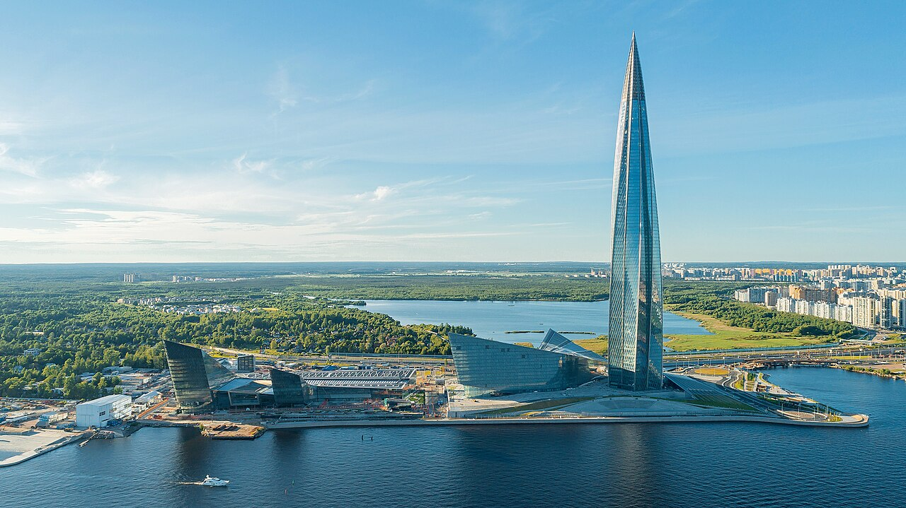
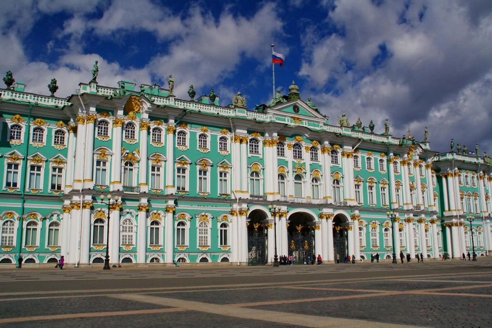
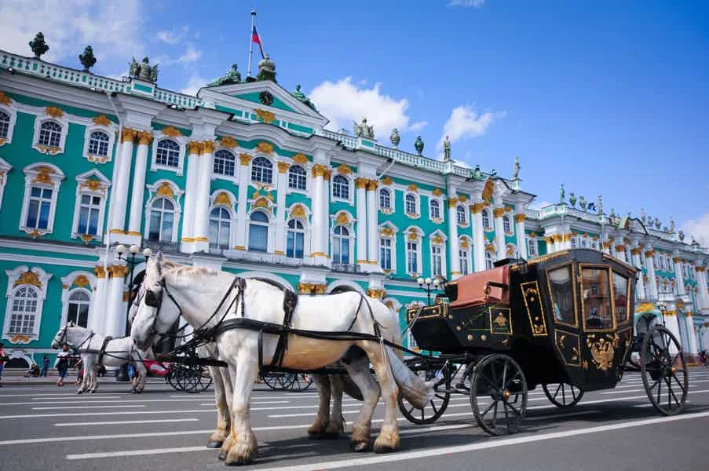

Санкт-Петербург — один из важнейших экономических центров Российской Федерации.

Санкт-Петербург является культурным центром мирового значения, часто его называют «Культурной столицей» России.

Существенную роль в экономике играет туристический бизнес, связанный с приёмом гостей из России и зарубежных стран, а также связанная с этим экономическая активность в сфере обслуживания.
